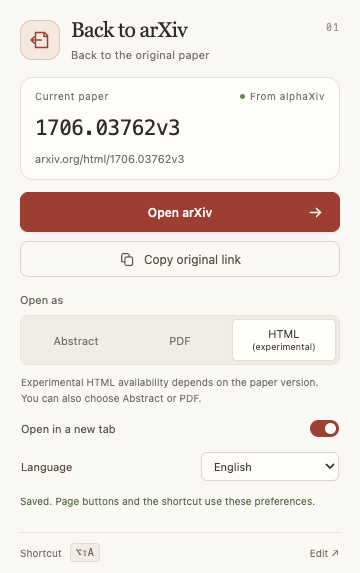

Back to arXiv
A shortcut for your research
Back to the
original paper.
Open alphaXiv papers on arXiv.
Choose the way you like to read.
- Abstract, PDF & HTML (experimental)
- Keep paper versions. Copy original links.
- English & 简体中文
Your next read starts with the original.

Actual extension interface · English